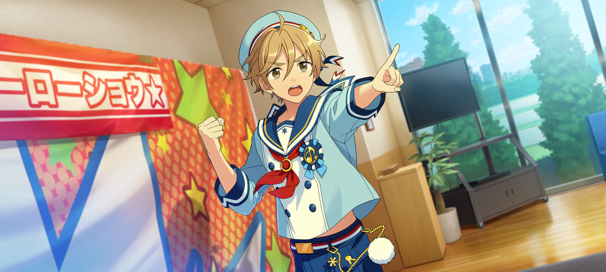
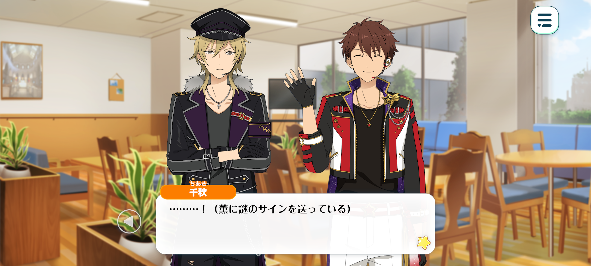
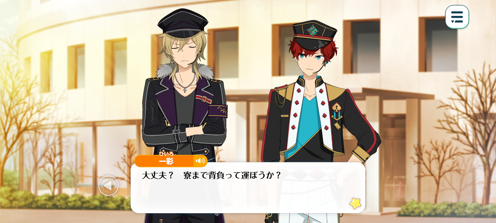
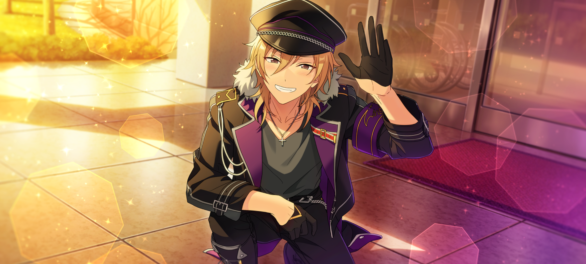

Scout! Scorpio's Venom
Capture Your Heart – Chapter 6


Time: A couple of days later, the day of the show

Tomoya: “I’ve found you, Kaijin Scorpio!”
Kaoru: “Ahaha ♪ You’re as foolish as usual, Rabi Ranger!”
“That's where you're wrong. I’ve found you. Attack, Soldier…♪”
Tomoya: “Uwaah?! I've been blinded by a barrage of playing cards...!”
Hiiro: “I am the Spade, Amagi Hiiro! Who summoned me?!”
Kaoru: “I did. Come here, Spade-chan~♪ This card is your proof.”
“Now then. Seize him!”
Hiiro: "Umu! As you command!"
“—Hah!”
Tomoya: ...Whoa! Watch it! You nearly hit me!
Hiiro: Don't worry. I'll go along with whatever you do.
No matter what you improvise, I would never hurt you!
Tomoya: You said the same thing during practice, too... Then how about we put that to the test? Is it alright if I hit you for real?
It's a hero show, after all. The kids love big, flashy battles!
Hiiro: Umu! Trust me and hit me with everything you've got!
Tomoya: “hhAAAAAH!”
Kaoru: (Whoa! Hiiro-kun actually fell to his knees after that punch...)
(—But he's fine! He's already back on his feet and charging straight at Tomoya-kun?!)
(That definitely wasn't part of the script. Those two are pretty good at thinking on their feet~.)
Hiiro: “Nice try!”
Kaoru: (They're evenly matched! The kids can't take their eyes off this nail-biting battle.)
(Bringing Hiiro-kun on as my henchman was a good call... Hm?)

Chiaki: …! (Sending Kaoru weird signals.)
Kaoru: (What's with him...? He's waving his hands around like crazy, but I haven't the slightest idea what he's trying to tell me.)
(Well, Moricchi's here now, so it's time to put Plan C into action.)
(All I need to do is give Tomoya-kun and Hiiro-kun the signal, and—)
“Ahahaha! I've got you now~! ☆”
Tomoya: "Not Hokuto-senpai?! You coward, Kaijin Scorpio!"
Kaoru: “Fufu. To a villain, that's practically a compliment. Thanks ♪”
“Now then... What's this? Your power comes from this penguin, doesn't it? Well, if I snatch him away, it's curtains for you, hero~”
“Farewell, Rabi Ranger…♪”
Tomoya: "Damn it...! I can't let things end like this! Not here...!"
Chiaki: "Aha! But it doesn't have to end here! Your story is only just beginning!"
“The red flames are the mark of justice! Burning bright, like the very sun of life!"
“This hero may be a little late to the party, but here I am! Ryusei Red, Morisawa Chiaki...☆”
Kaoru: “Tch, he’s here… Come on, Soldier! Do your worst!"
Hiiro: "Fumu? Who should I attack first? I cannot act without clear instructions."
Kaoru: "Just—just play it by ear!"
Chiaki: “Now!”
Kaoru: “Huh!?”
Chiaki: "Fuhahaha! Hokuto-senpai has been rescued! ☆"
"Hokuto-senpai! Now, let's give Rabi Ranger the hero power he needs to defeat the villain!"
"Kids! Let's all join forces and cheer Rabi Ranger on! Ready, everyone? One, two...!"
“Do your best, Rabi Ranger~~!”
Tomoya: "NNNNNGH! I can feel the power surging through me! With this, I'll definitely defeat you! Rabbit Shot!"
Kaoru: "Gah...! Retreat! I won't forget this! I'll be back!"
Hiiro: "Wait, Kaijin Scorpio! I need clear instructions before I can retreat!"
Chiaki: "Justice has triumphed once again! Thank you all for your wonderful cheers!"
Tomoya: "I hope you all had a wonderful time! Thank you very much for coming!"
Time: That evening

Kaoru: It's getting pretty late, huh? I'm exhausted. Guess I'm not used to doing this sort of thing.
Hiiro: Are you okay? Would you like me to carry you on my back to the dorms?
Kaoru: That's sweet of you, but I'm alright.
Anyway, well done today, Hokuto-senpai-chan! The show was a huge success, and we couldn't have done it without you.
The kids were saying it was their first time seeing a penguin, so I'm glad we brought you along.
Hiiro: Hm? Hokuto-senpai just bowed. What does that mean?
Tomoya: Maybe he's saying, "You're very welcome"? Or perhaps he's saying, "Good work today"?
Either way, you did a great job~. There, there. Good boy...♪
Kaoru: Speaking of which, you two really got carried away, didn't you? You went completely off-script! You caught me by surprise.
Still, it was obvious how much you wanted the kids to have a good time. It was really nice to watch.
Tomoya: Ahaha... Sorry about that. Amagi started it, and I got a little carried away myself.
Kaoru: Nah, don't worry about it. You were both great! I didn't even know you could improvise like that. Guess I've got some studying to do myself.
Actually, why don't you teach me sometime~? Maybe I'll start calling you Tomoya-sensei! ♪
Tomoya: Don’t do that. Besides, I've still got a long way to go myself...
Oh? There's a boy in a wheelchair coming over with a nurse. I think he wants to talk to us.
Chiaki: You're... Ah, yes! You're the kid who sent me that letter!
Umu! I came here to cheer you on in your fight against your illness! ☆ So, what did you think of the show?
Kaoru: (Ahaha. Look at how happy he is. Of course he would be, getting to meet someone who's inspired him so much.)
Chiaki: ...Hm? You want to speak to Kaijin Scorpio?
Of course! Hakaze, he's all yours!
Kaoru: Hey! Don't go revealing my secret identity to everyone, alright?
Just kidding~♪
Hey there! You wanted to talk to me?
Oh? It was your first time seeing such a cool villain? You've always dreamed of becoming a hero, but now you're thinking that being the bad guy might not be so bad either, if you can be like me...?
Ahaha. Looks like I've stolen your heart, haven't I~?

I heard you're having your operation tomorrow. Take care of yourself, alright?
...Of course! Once you're feeling better, we can go out and cause a little mischief together. How does that sound?
It's our little secret, so let's make a pinky promise, okay...?♪
Tomoya: …Uwa, uwaa.
Kaoru: Did that make me look pretentious?
Tomoya: No, not at all! The complete opposite! Is this just... this side of you… I just–? Wow...
I can't even put it into words right now. I'm completely speechless. I'll get back to you once I've figured out how to express what I'm feeling.
Kaoru: Really? Well, in that case, you'll just have to keep thanking me! And while we're at it, I could teach you a few pick-up lines, too~. Nazuna-kun probably wouldn't be too happy about that, though. Ahaha.
Ahh, that was fun. Hero shows aren't really my thing, but...
I have to admit, that wasn't half bad...♪